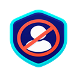

ChannelFence
Creator blocker settings
Settings
ChannelFence runs only on YouTube and keeps your preferences on this device.
Enable ChannelFence
Pause all blocking without deleting your list.
Hide Shorts in feeds
Removes Shorts shelves and cards from Home, search, and other feeds. The Shorts tab remains available.
Hide comments from blocked creators
Also removes comments when ChannelFence can identify the commenter’s channel.
Blocked creators 0
Search, unblock, or back up your list. Imported entries are merged with the current list.
Your block list is empty.
Private by design. Channel names, channel links, settings, and your block list stay in Chrome’s local extension storage. ChannelFence does not send them to us or anyone else.
If something slips through, report a bug.